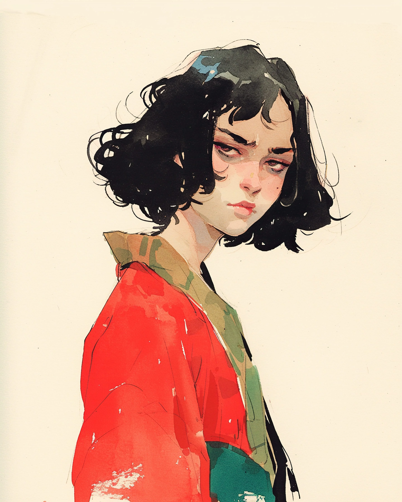

재즈 플레이리스트가 1번 트랙으로 다시 돌아간 지 정확히 3초 후, 육각형 타일 위에서 도자기 머그잔이 산산조각 났다. 비니를 쓴 학생은 지난 46번의 화요일과 똑같이 오트 밀크 라떼를 떨어뜨렸다.
[The ceramic mug shattered against the hexagon tiles exactly three seconds after the jazz playlist looped back to track one. The beanie-wearing student dropped his oat milk latte, just as he had for the last forty-six Tuesdays.]
렌은 눈 하나 깜짝하지 않았다. 고개를 들지도 않았다. 그저 손바닥에 턱을 무겁게 괸 채 앉아서, 꼼짝도 하지 않는 햇살 속에 둥둥 떠 있는 먼지 한 톨을 멍하니 응시할 뿐이었다.
[Ren didn’t flinch. She didn’t even look up. She just sat there, chin resting heavily in her palm, staring at a dust mote floating in a sunbeam that never moved.]
그녀는 빨간색 실크 로브의 깃을 고쳐 잡았다. 이 하루가 처음 몇 번 반복될 때만 해도 그녀는 단추며 지퍼, 그리고 사회적 체면 따위를 신경 썼었다. 열두 번째 루프 쯤에는 트레이닝 바지로 갈아입었다. 이제 40번째 반복도 훌쩍 넘긴 지금, 그녀는 그냥 로브에 정착했다. 편하고, 색깔도 밝고, 솔직히 우주가 그녀의 옷차림 따위엔 전혀 관심이 없는 게 분명한데, 굳이 그녀라고 신경 쓸 필요가 있겠는가?
[She adjusted the collar of her red silk robe. On the first few loops of this day, she had bothered with buttons, zippers, and societal expectations. By loop twelve, she switched to sweatpants. Now, deep in the forties, she had embraced the robe. It was comfortable, it was bright, and frankly, the universe clearly didn’t care about her fashion choices, so why should she?]
“다음 손님!”
[”Next!”]
카운터에서 외치는 소리가 들려왔다. 렌은 병에서 흘러내리는 꿀처럼 느릿하고 흐느적거리는 몸짓으로 스툴에서 힘겹게 몸을 일으켰다. 그녀는 발을 질질 끌며 계산대로 향했다. 명찰에는 ‘카일’이라고 적혀 있지만 영혼은 분명 딴 곳에 가 있는 듯한 바리스타가 마치 무기처럼 네임펜을 쥐고 있었다.
[The shout came from the counter. Ren dragged herself off the stool, her movement slow and liquid, like honey pouring from a jar. She shuffled to the register. The barista, a man whose nametag read Kyle but whose soul clearly longed to be elsewhere, held a sharpie poised like a weapon.]
“블랙 커피요.” 렌이 말했다. “라지 사이즈로.”
[”Black coffee,” Ren said. “Large.”]
“성함은요?”
[”Name?”]
“렌이요.”
[”Ren.”]
그녀는 머릿속으로 철자를 되뇌었다. R. E. N. 세 글자. 뚜렷하고 날카로운 소리. 갓난아기도 낼 수 있는 소리. 개라도 열심히만 하면 낼 수 있을 법한 소리.
[She spelled it out in her head. R. E. N. Three letters. A distinct, sharp sound. A sound a baby could make. A sound a dog could probably make if it tried hard enough.]
카일은 고개를 끄덕였고, 종이컵 위로 마커가 끽끽거리는 소리를 냈다. 렌은 잉크가 번져가는 모습을 멍하니, 하지만 묘하게 매료된 눈빛으로 바라보았다. 이것이 이 하루의 하이라이트였다. 변수. 카페인과 재즈로 이루어진 이 연옥에서 유일하게 달라지는 것이었다.
[Kyle nodded, the marker squeaking against the paper cup. Ren watched the ink bleed with dead-eyed fascination. This was the highlight of the day. The variable. The only thing that changed in this purgatory of caffeine and jazz.]
어제 그녀는 ‘벤(Ben)’이었다. 그전 날은 ‘렌(Wren)’이었고. 지난주에는 ‘프렌드(Friend)’였다.
[Yesterday, she was Ben. The day before, Wren. Last week, she had been Friend.]
카일은 글씨를 다 쓰고는 단호하게 ‘딱’ 소리가 나도록 마커 뚜껑을 닫고, 카운터 너머로 컵을 스르륵 밀어 보냈다. 그는 컵을 쳐다봤다. 그녀를 쳐다봤다. 다시 컵을 내려다봤고, 혼란스러움에 그의 미간이 찌푸려졌다.
[Kyle finished writing, capped the marker with a decisive click, and slid the cup across the counter. He looked at the cup. He looked at her. He looked back at the cup, confusion knitting his eyebrows together.]
“주문하신...” 그는 눈을 가늘게 뜨더니, 마치 어리둥절한 골든 리트리버처럼 고개를 갸웃거렸다. “...런(Run) 님?”
[”Coffee for...” He squinted, tilting his head like a confused golden retriever. “...Run?”]
렌은 컵을 집어 들었다. “거의 맞았어요, 카일.”
[Ren took the cup. “Close enough, Kyle.”]
그녀는 다시 발을 질질 끌며 자리로 돌아가, 쓰고 뜨거운 액체를 한 모금 마시고는 내일 오전 10시 3분이 다시 돌아오기를 기다렸다.
[She shuffled back to her seat, took a sip of the bitter, hot liquid, and waited for 10:03 AM to roll around again tomorrow.]